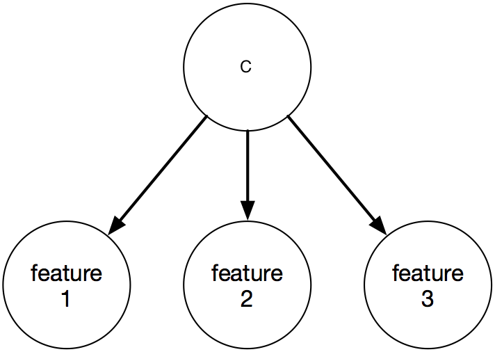

"All models are wrong, but some are useful."
-- George E.P. Box
Aðalbrandr is visiting St. Louis from Norway and has been having the hardest time distinguishing boys and girls because of the weird American names like Jack and Jane. This has been causing lots of problems for Aðalbrandr when he goes on dates. When he heard that Washington University has a Machine Learning class, he asked that we help him identify the gender of a person based on their name to the best of our ability. In this project, you will implement Naïve Bayes to predict if a name is male or female. But before you get started, you need to create a GitHub Classroom team and clone the project2 repository.
| Files you'll edit: | |
naivebayesPXY.py | Computes P(X|Y) |
naivebayesPY.py | Computes P(Y) |
naivebayes.py | Computes log probability log P(Y|X = x1) |
naivebayesCL.py | Turns the Naïve Bayes output into a linear classifier |
classifyLinear.py | Makes predictions with a linear classifier. |
| Files you might want to look at: | |
name2features.py | Converts a name to a feature vector. You do not need to edit this, but you may want to! |
genTrainFeatures.py | Calls name2features.py. |
whoareyou.py | Allows you to test your linear classifier interactively. |
example_tests.py | Describes several unit tests to find obvious bugs in your implementation. |
boys.train | The training examples for boys names. |
girls.train | The training examples for girls names. |
How to submit: You can commit your code through the command line with git and submit on Gradescope either in a zip file or through Github. If the project is submitted before the initial deadline passes, you will receive information and a score for the performance evaluation (only once the deadline is reached).
However, the autograder will not reveal any information on how your code performed for any projects submitted during the three day extension period. You can submit your project as many times as you want but the final submission score will count for your grade. If you submitted by the initial deadline and would like to improve your performance score, you can submit again during the extension period.
Grading: Your code will be autograded for technical correctness. Please do not change the names of any provided functions or classes within the code, or you will wreak havoc on the autograder. However, the correctness of your implementation -- not the autograder's output -- will be the final judge of your score. If necessary, we will review and grade assignments individually to ensure that you receive due credit for your work.
PYTHON Version in Autograder: The autograder uses PYTHON 3.6. To rule out any incompatabilites of differnt versions we recommend to use any version of PYTHON 3.6 or newer for the implementation projects.
Regrade Requets: Use Gradescope for regrade requests.
Academic Dishonesty: We will be checking your code against other submissions in the class for logical redundancy. If you copy someone else's code and submit it with minor changes, we will know. These cheat detectors are quite hard to fool, so please don't try. We trust you all to submit your own work only; please don't let us down. If you do, we will pursue the strongest consequences available to us.
Getting Help: You are not alone! If you find yourself stuck on something, contact the course TAs for help. Office hours and Piazza are there for your support; please use them. If you can't make our office hours, let us know and we will schedule more. We want these projects to be rewarding and instructional, not frustrating and demoralizing. But, we don't know when or how to help unless you ask.
Take a look at the files girls.train and boys.train. For example with the unix command
cat girls.train
... Addisyn Danika Emilee Aurora Julianna Sophia Kaylyn Litzy HadassahBelieve it or not, these are all more or less common girl names. The problem with the current file is that the names are in plain text, which makes it hard for a machine learning algorithm to do anything useful with them. We therefore need to transform them into some vector format, where each name becomes a vector that represents a point in some high dimensional input space.
name2features.py reads a name, for example one in girls.train (or in boys.train) and converts it into a 128-dimensional feature vector.
Can you figure out what the features are? (Understanding how these features are constructed will help you later on in the competition.)
We have provided you with a Python function genTrainFeatures.py, which calls this Python script, transforms the names into features and loads them into Python. You can call
[x,y]=genTrainFeatures()to load in the features and the labels of all boys and girls names.
The Naïve Bayes classifier is a linear classifier based on Bayes Rule. The following questions will ask you to finish these functions in a pre-defined order.
Remember: as a general rule, you should avoid tight loops at all cost.
(a) Estimate the class probability P(Y) in
naivebayesPY.py
. This should return the probability that a sample in the training set is positive or negative, independent of its features.
(b) Estimate the conditional probabilities P(X|Y) in
naivebayesPXY.py
. Use a categorical distribution as model. This will return the probability vectors for all features given a class label.
(c) Solve for the log ratio, $\log\left(\frac{P(Y=1 | X)}{P(Y=-1|X)}\right)$, using Bayes Rule.
Implement this in
naivebayes.py.
(d) Naïve Bayes can also be written as a linear classifier. Implement this in
naivebayesCL.py
(e) Implement
classifyLinear.py
that applies a linear weight vector and bias to a set of input vectors and outputs their predictions. (You can use your answer from the previous project.)
You can now test your training error with
>> [x,y]=genTrainFeatures(); >> [w,b]=naivebayesCL(x,y); >> preds=classifyLinear(x,w,b); >> trainingerror=np.sum(preds~=y)/(y.shape[1]) trainingerror = 0.XX...Once your Naïve Bayes code is implemented, you can try the function
whoareyou.py to test names interactively.
xTr,yTr = genTrainFeatures()
w,b = naivebayesCL(xTr,yTr)
whoareyou(w,b)
In the terminal:
Who are you>David
David, I am sure you are a nice boy.
Who are you>Anne
Anne, I am sure you are a nice girl.
Who are you>byebye
Tests. To test your code you can run example_tests.py, which describes and partially implements several unit tests. Feel free to implement your own tests to better debug and test your implementation. Those tests are a subset of what we will use in the audograder to grade your submission.
70% of the grade for your project2 submission will be assigned based on the correctness of your implementation.
name2features.py. The autograder will use your Python script to extract features and train your classifier on the names training set.